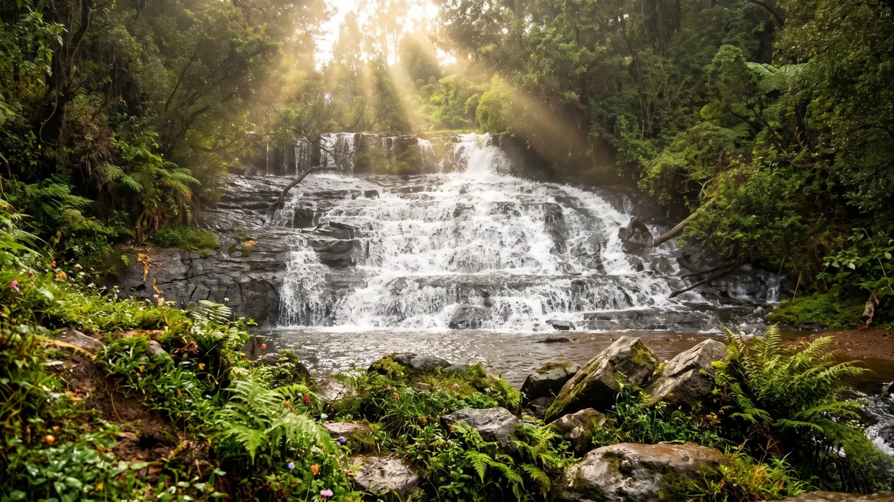

Standard · ~3 hrsPallangi Falls Trail
A forest jeep track down to Pallangi Falls with cool mist, rock pools and a short walk to the water. Best soon after the rains.
Roughness Moderate Up to 4From₹4,000

Guided off-road trails
Cottages Kodaikanal runs a guided jeep safari in Kodaikanal from ₹3,200 per private jeep, for families, couples and groups, through shola forest and ridge viewpoints.
Choose your trail
In 2026, a Kodaikanal jeep safari costs ₹3,200 to ₹5,500 per private jeep and runs three to six hours. It is best for families, couples, photographers and groups of up to six. By our booking records, the Dolphin's Nose trail is the most booked. The bar shows how rough each ride gets. Tap a trail to load it into your booking, then ask for a Kodai jeep trip quote on your dates. Larger groups can split across two jeeps.

Standard · ~3 hrsA forest jeep track down to Pallangi Falls with cool mist, rock pools and a short walk to the water. Best soon after the rains.
Roughness Moderate Up to 4 Most booked · 4–5 hrs
Most booked · 4–5 hrsA forest track and ridge climb ending at the sheer Dolphin's Nose drop-off. The off-road ride most guests choose to start with.
Roughness Off-road Private jeep, up to 6 Extended · ~6 hrs
Extended · ~6 hrsTerraced farmland and village lanes out to Poombarai and the Mannavanur sheep farm. A relaxed full day with many scenic pauses.
Roughness Mixed Up to 6Exact pricing depends on your dates and group size. Forest permit routes like Berijam Lake add a small fixed fee. Quotes usually reach you on WhatsApp within a few hours, so you can lock in the same day. Get an exact quote →
From first light to after dark
Every option is a guided safari with a local driver, not a bare jeep rent. Among adventure activities in Kodaikanal, a jeep ride suits first-timers, couples and families equally well. A night safari in Kodaikanal means a star-gazing drive on open roads, because forest zones close at dusk. Pick the style that matches your trip, then fine-tune the route and the pickup time when you book.
Why a jeep
A Kodaikanal jeep safari is a guided off-road drive through forest trails, ridge viewpoints and villages that taxis and tour buses never reach. Every booking comes with a local driver-guide and a fixed route. You ride in a 4x4 with someone who knows which mud tracks stay passable after rain and which shortcuts save an hour.
Most trips start early and run three to six hours, which makes it a good fit for travellers on a short stay. Routes follow established forest tracks, so it is a low-impact way to see shola forest and grassland up close. For visitors who want scenery rather than a workout, it is the most rewarding adventure Kodaikanal offers. In our own experience, every route has been ridden by our team, and every jeep is checked before it is booked, with tyres, brakes and seatbelts inspected.
Mud trails and ridge roads that sedans cannot handle, covered in a 4x4 built for the climb.
Area drivers who know the route, the weather and which stops are genuinely worth your time.
Ridge routes and valley turns chosen for the view, never for the shortest way back to town.
Jeeps seat four to six, so your group sets the pace and pauses wherever the light is great.
On the trail
Every route mixes a couple of well-known viewpoints with the offbeat stops most visitors never see. Anyone searching for a jungle safari in Kodaikanal will find shola woodland instead of a tiger reserve. Birds, Indian bison and giant squirrels are sometimes spotted, so treat a wildlife safari in Kodaikanal as a bonus, never a promise. The scenery, the cool air and the quiet are what you are really booking.


*Berijam Lake requires a forest permit, which we arrange whenever it is on your route.
Trail conditions
Warm days and dry trails make this the easiest season for first-timers, though afternoon haze softens the far valley views. Carry water and a sun hat.
Slippery ground closes some off-road stretches, so we confirm open routes first. Waterfalls look their finest now, and the forest smells of wet earth.
Skies clear up and valleys turn a deep green. Crowds stay thin, which makes this the most underrated window of all, with softer light for photographs.
Cold mornings, misty roads and the widest visibility make winter the best overall season for any trail you pick. Wear a proper jacket for dawn drives.
Before you ride
Good to know: trails are unpaved in places and a jeep rides firmer than a sedan. Compared with other adventure sports in Kodaikanal, a safari needs no fitness or experience, only a willingness to be bumped around. Mention back or motion-sickness concerns and we will steer you to the smoother Green Valley loop. Children under four are best kept to shorter routes, and infants need a car seat from home.
In the price
Everything is confirmed clearly in your quote, never added as a surprise later. Your WhatsApp confirmation works as the ticket you show your driver, so there is no counter to queue at and nothing to print.
Three steps
Guest reviews
Our cabs and jeeps are run by the same family that hosts these guests.
We booked a family cottage for five of us and it never felt cramped. Staff arranged everything from bonfire wood to breakfast timing.
Traveled from Bengaluru for a college reunion — the group stay cottage fit all ten of us with room to spare.
Our honeymoon stay had exactly the privacy we wanted — hills outside the window, a fireplace for the cold evenings.
Find us
Cottages Kodaikanal, Near Zion School Junction, MM Street, Lawsghat Road, Kodaikanal - 624101.
Open in Google Maps · Call +91 75023 45777
Questions
Most safaris run three to six hours depending on the route. A short valley loop fits into half a day, while a village-and-viewpoint combination takes a full morning or afternoon, including photo stops and a tea break.
Yes, on the standard routes. Drivers keep a moderate pace and stop often. For very young children or anyone with back issues, ask for a smoother route instead of the roughest off-road trail options we run.
The kodaikanal jeep safari price covers the jeep, fuel, a local driver-guide, tolls and permit fees for your route. Meals, entry tickets at specific viewpoints and personal expenses are usually extra and stated in your quote.
Most bookings are already private per group. A Kodaikanal jeep rent always includes a local driver-guide, because forest tracks and permits need local knowledge, so we do not offer self-drive. Share your group size and we confirm.
September to March gives the clearest trails and best viewpoint visibility. Monsoon months, June to August, can close some off-road stretches, so we confirm which routes are open for your dates before you pay anything.
Forest zones close at dusk, so there is no wildlife night drive inside them. Cottages Kodaikanal offers a kodaikanal night safari as a star-gazing drive on open roads, which suits couples and small groups.
Yes. Tell us what you want to add, whether that is an extra viewpoint, a longer village stop or a photography-focused pace, and we adjust the route before booking. Other adventure places in Kodaikanal can be paired too.

Explore the mountains beyond the usual sightseeing circuit. Pick a trail and a date, and we handle the jeep, the guide and the permits. Book the best jeep safari in Kodaikanal today and ride out with a driver who knows every turn. Couples, families and friends are all welcome on a private jeep.